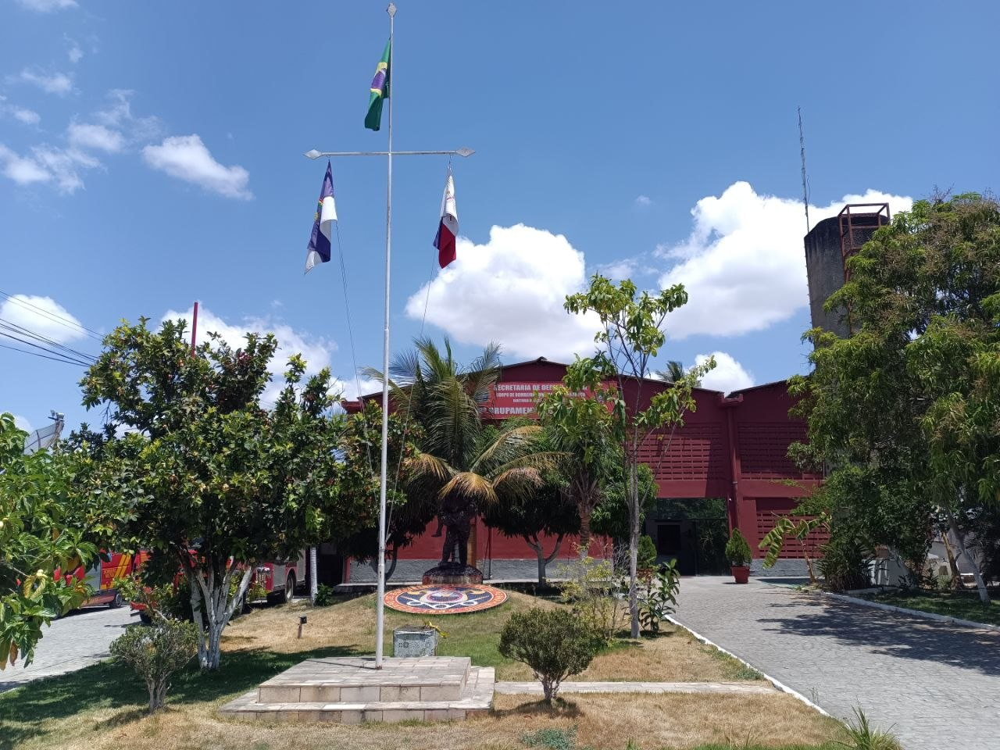

Entrada
O login e a animação das mangueiras, do clique em Entrar até a tela inicial. Versão 2: a foto nova do quartel no fundo do login, o dobro de brasas, três em cada quatro esfriando até virar cinza, e o pouso no quadro da tela inicial.
Em revisão por você. A animação toca inteira uma vez a cada 12 h, pela escolha da pessoa; o resto do tempo a entrada é curta. Nada mudou no site. Nome, e-mail e senha são de exemplo.
Do clique em Entrar à tela inicial
Clique em Entrar no palco. Com a senha certa e o servidor rápido, a tela inicial chega em cerca de 2,6 s e as brasas ficam mais 4 s sobre a cena. Embaixo do palco aparece o nome do quadro que está passando.

Quartel do 2º GB

Sistema de Gestão - 2º GB
2º Grupamento de Bombeiros · Corpo de Bombeiros Militar de Pernambuco
Entrar
Use o e-mail cadastrado pela sua seção.
O que muda na versão 2
Seus pedidos de 23/11 e 25/11, mais o que o quadro novo da tela inicial obriga. As mangueiras, a junta, a batida, a água, a senha errada e a regra das 12 h ficam como estão.
| Item | Hoje | Versão 2 |
|---|---|---|
| Foto do login | O quartel nublado, com as setas da galeria do celular gravadas embaixo. | A foto que você mandou em 23/11: o quartel ao sol, com as três bandeiras. Só no fundo do login; a animação e a cena final não mudam. No computador, enquadrada para as bandeiras e a fachada ficarem à vista à direita do véu vinho. |
| Brasas do ambiente | 44, todas iguais. | 88, em três profundidades: as pequenas mais lentas e apagadas, ao fundo; as grandes mais rápidas e fortes, na frente. |
| Brasas do botão Entrar | 26. | 52. |
| Cinza | 22 pontos descendo. | 44. E três em cada quatro brasas esfriam na subida: de alaranjada passa a vermelha e termina cinza, sem brilho, antes de sair do quadro. Uma em cada quatro apaga ainda alaranjada (sua escolha de 25/11). |
| Quanto duram depois do pouso | 4 s, apagando nos últimos 1,6 s. | 4,2 s, apagando nos últimos 1,6 s. A primeira revisão tinha 6,3 s; você pediu um terço a menos em 25/11. |
| Sobre a saudação | Com toda a força, por baixo do texto. | Por cima de tudo, mas a um terço da força sobre o nome e a data, com a borda suave. No resto do quadro, força inteira. |
| Onde pousa | Na faixa alta, de ponta a ponta. | No quadro da tela inicial: 3:1, até 400 px (o teto sobe de 300 a seu pedido de 25/11), com margens e cantos de 12 px, e a imagem cortada como no site (centrada, a 66% na vertical). A barra do topo e os atalhos aparecem em volta enquanto a câmera se afasta. |
| O que entra depois do pouso | A saudação e os cartões dos módulos. | A saudação, com os cartões dos próximos serviços e os avisos junto dela; embaixo, os atalhos e o próximo serviço entram em fila. |
| Entrada curta e sem movimento | Sem a sequência e sem efeitos. | Igual. |
O que não entrou
Para você saber o que continua igual ao mockup de 22/11.
- A chegada e o enchimento da mangueiraFicam como estão. Em 25/11 você decidiu deixar de lado as capturas do vídeo do quartel que os pedidos R1 e R4 de 20/11 esperavam.
- Defeitos antigosA boca do anel chapada antes do engate e a sombra leve embaixo da mangueira no afastamento. Ficam para quando a junta for refeita com as fotos novas.
- Velocidade no celularO dobro de partículas pesa. Antes de ir ao plano, meço num celular lento simulado; se travar, a proposta é reduzir as partículas só nos aparelhos fracos.
O que precisa da sua palavra
- A foto no loginNo computador, o véu vinho cobre a metade esquerda e as bandeiras ficam à direita, atrás do cartão. Se preferir as bandeiras à mostra, o cartão vai para a esquerda e a marca para a direita.
- Uma entrega sóA foto, as brasas e o pouso no quadro novo vão juntos à PLANEJAMENTO, como uma entrega pequena. Os cartões dos próximos serviços e os avisos são entregas da tela inicial, não desta.
O que vem depois
Com a sua aprovação, a especificação da animação (docs/superpowers/specs/2026-11-20-transicao-login-design.md) ganha a versão 2 e a PLANEJAMENTO planeja a entrega. Voltar ao Manual